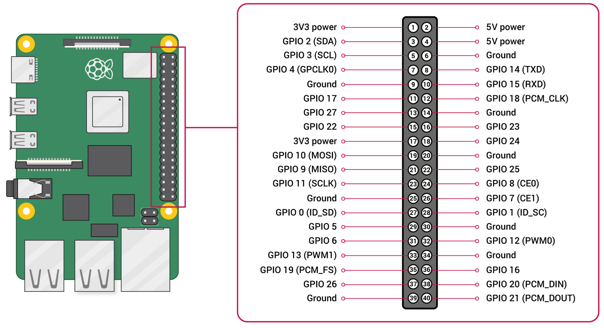

BytesOfProgress
Wiki
Raspberry Pi 3
The Raspberry Pi 3 comes in two different versions: B and B+. But what are the differences?
Processor:
Model 3B: Broadcom BCM2837 SoC @ 1.2GHz
Model 3B+: Broadcom BCM2837 SoC @ 1.4GHz
Ethernet:
Model 3B: 100Base
Model 3B+: 1000Base (Gigabit Ethernet, though limited to 315 MBit/s due to USB 2.0 bottleneck)
WiFi:
Model 3B: 802.11b/g/n
Model 3B+: Dual-Band 802.11ac
Power over Ethernet (PoE):
Model 3B: No
Model 3B+: Yes (with additional PoE HAT)
RAM:
Both models: 1GB LPDDR2
Ports:
Both models: 1x DSI, 1x RCA x1, 1x HDMI, 4x USB
The B+ model also features a slightly faster revision of the Broadcom processor and improved networking hardware, including Gigabit Ethernet, PoE, and dual-band 802.11ac WiFi. The B+ model is designed to be compatible with the same cases and add-ons as the Model B, ensuring a smooth upgrade path. While the processor upgrade is modest and may not significantly impact performance for all use cases, the networking improvements make the B+ model more suitable for projects that require faster or more robust network connections.
PinOut
back